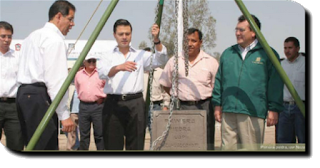
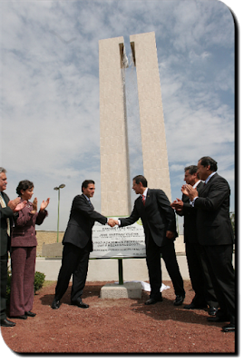

El 29 de abril de 2006 el Gobernador del Estado de México, Enrique Peña nieto y el Rector de la Universidad Autónoma del Estado de México, José Martínez Vilchis acompañados por el secretario de Educación del gobierno estatal, Isidro Muñoz colocaron la primera piedra de la Unidad Académica Profesional Nezahualcóyotl la cual tiene una superficie de 8 704 metros cuadrados.
acompañado por el Gobernador del Estado de México Enrique Peña Nieto; por el presidente del Tribunal Superior de Justicia del Estado de México, José Castillo Ambriz; por el presidente de la Comisión Permanente de la LVI Legislatura estatal, diputado Luís Antonio Guadarrama Sánchez, y el presidente municipal de Nezahualcóyotl, Víctor Manuel González Bautista, entre otros funcionarios; inauguraron la Unidad Académica Profesional Nezahualcóyotl.
Entregó las preseas Ignacio Manuel Altamirano 2007 a los 59 alumnos más destacados del nivel medio superior, de licenciaturas y postgrados, así como la Presea Ignacio Ramírez Calzada 2007, que se otorgó al profesor Carlos Díaz Delgado.
El rector de la UAEM, José Martínez Vilchis, dijo que al Estado de México le espera la tarea educativa más grande del país, porque tendrá que preparar por lo menos a 90 mil estudiantes en los próximos 5 años, de acuerdo con las previsiones nacionales y estatales,  y añadió que en la actualidad esta casa de estudios ha aportado el 13 por ciento de la matricula en el nivel superior y para poder sostener esta demanda deberá crecer en al menos 12 mil estudiantes más. Destacó que esta nueva unidad académica inicia su curso con 360 estudiantes en la Licenciatura en Educación para la Salud; Ingeniería en Transportes; Ingeniería de Sistemas Inteligentes y la Licenciatura de Comercio Internacional, con lo que se busca brindar más oportunidades a los alumnos que aspiran a una formación universitaria con base en el aprovechamiento, la capacidad y recursos, así como la diversificación de las modalidades y programas educativos. Ante universitarios que acudieron de todas las regiones del estado en donde está presente la UAEM, Martínez Vilchis dijo que la Unidad Académica Profesional Nezahualcóyotl nace mejor equipada para preparar a los profesionistas que el país y en entidad necesitan. Dijo también que la construcción de instituciones educativas en la región oriente, es una especie de renacimiento cultural ya que aquí se construye para el futuro y hoy se inauguran salones de clase interactivo, cámara de Gesell, cafetería, centro de enseñanza de idiomas, laboratorios, biblioteca, auditorio, espacios de cultura y deportivos. En la ceremonia se rindió un homenaje póstumo al primer rector de la Universidad Autónoma del Estado de México, Juan Josafat Picardo Cruz, quien falleció recientemente.